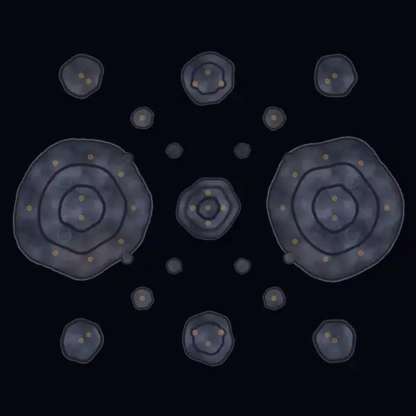

Hierophant
Cyclopean Commander
2500 metal · 4200 HP · altitude 45
Gaze (430), Cataract Stare (240)
A 3D space RTS that runs directly on the Spring/Recoil engine. Free, open source, and built so you can create your own units.
Run a classic RTS economy: a commander, metal extractors, energy, factories, defences, radar and storage. Now lift the whole war off the ground. Armies of six unit types per side fight across floating asteroids, and lose your commander and you lose the match.
Scouts and raiders hover at 60–95 elmos, assaults near 90, snipers and artillery around 150, titans at 210–230. Layers are real, and builders carry your expansion across the void.
Voidborn is its own game, not a locked mod. Units, weapons and scripts are plain, generated definitions, so you can design a new creature, drop it into the game and field it against the bots.
No price, no ads, no accounts. Read the code, fork it, rebalance it, ship your own version. The generators for models, textures, defs and the map are all in the repo.
Press D for the Cataract Stare or the Devour: a manual-fire strike that can turn a fight. Commander death ends the game by default.
Play Choir or Maw against a bot at three skill levels, or run Bot vs Bot and spectate. Start scripts are included.
Runs directly on the Spring/Recoil engine with its own start scripts. Tested headless on Recoil 2026.07.04, with Lua widgets and the full Spring toolchain at your disposal.
Each unit’s radar reads, clockwise from the top: durability, range, altitude, metal cost and value (hit points per metal), scaled against the whole roster.
Pale, many-eyed cyclopes. Long-range lasers, fragile at close quarters.
Cyclopean Commander
2500 metal · 4200 HP · altitude 45
Gaze (430), Cataract Stare (240)
Builder
90 metal · 520 HP · altitude 50
None
Scout
38 metal · 230 HP · altitude 95
Pinprick (270)
Raider
55 metal · 330 HP · altitude 65
Lash Pulse (215)
Assault
195 metal · 1400 HP · altitude 95
Cyclops Gaze (380)
Long range
250 metal · 560 HP · altitude 150
Petrifying Beam (740)
Support
150 metal · 700 HP · altitude 105
None
Heavy
1650 metal · 9500 HP · altitude 230
Annihilating Gaze (650), Lesser Eyes (380)
Chitinous, toothed, many-legged. Short reach, tougher, regenerating and cheaper.
Maw Commander
2500 metal · 4400 HP · altitude 45
Acid Spit (420), Devour (240)
Builder
90 metal · 560 HP · altitude 50
None
Scout
32 metal · 240 HP · altitude 90
Acid Dart (235)
Raider
52 metal · 560 HP · altitude 60
Maw Breath (130)
Assault
160 metal · 2100 HP · altitude 80
Corrosive Bolt (345)
Artillery
205 metal · 600 HP · altitude 140
Spores (820)
Support
150 metal · 760 HP · altitude 100
None
Heavy
1450 metal · 13000 HP · altitude 210
Acid Cannon (620), Spore Barrage (520)
Each faction builds the same eight pillars of an economy and a defence, grown in its own image.
Factory
Metal extractor
Energy
Advanced energy
Storage
Radar
Light defence
Heavy defence
Factory
Metal extractor
Energy
Advanced energy
Storage
Radar
Light defence
Heavy defence
A 5120 × 5120 map for 2–4 players. Two symmetric home asteroids hold ten metal spots each, with three terrace heights and a crater-ring Eye in the centre. Islands float in a true void under a star and nebula skybox, and 43 metal spots are up for grabs.

Voidborn is a standalone game: put two archives in your Spring data folder, then start the engine with a start script.
<Spring data dir>/games/voidborn.sdz <Spring data dir>/maps/voidborn_rift.sd7 <Spring data dir>/engine/<version>/spring /path/to/Play_Choir_vs_Bot.txt
When the game screen loads, press Enter or the Start button. Use Play_Maw_vs_Bot.txt for the swarm, or Watch_Bot_vs_Bot.txt to spectate. To make your own units, run python3 tools/gen_assets.py && python3 tools/gen_defs.py from the source zip and rebuild.
Voidborn is an early first pass: the engine run is verified, the look and feel is not. It needs people who will make it real. Pick a corner, say hello on Discord and start.